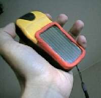

Gps units have unfortunate tendency to run out of power
just when they are needed most. While changing batteries in rain
with numb cold fingers whilst kayaking in Norway, I deciced to do
domething. These are some of the ideas I have been testing:

Solar-charging battery compartment cover: The panel produces 33 mA and the unit consumes 150 mA... However with 1800 mA NiMH-batteries you have about 10 hours reserve. And when batteries run out, you wait some 10-30 minutes and there is enough juice to get a fix.. This is for casual user, most of the time you keep it unpowered and upside down.
Water-proof and easy to make (out of heat-curing putty). I
could make & sell these myself.
External Panel: In this version I had six 33 mA panels enclosed in a CD-box. There is enough energy to keep the Etrex running continously. However there is some danger of overcharging the batteries. Thats why you keep checking the battery status indicator and keep the panel in shade when them batteries are full. You have to apply some silicone putty to make the battery box waterproof
.
(c) Timo Noko 2001
Fool's Errata: I have got several pieces of advice telling me that "You cannot connect solar panel directly to battery connector. You'll need Fuse, Diode and Charging Circuit, otherwise severe damage or expolosion will occur."
I have got Master's Degree in Electronic Engineering and let me assure that you can. Dangers in this case are: Overcharging, Discharging, and Nukular Particles....
You cannot overcharge 1800 mAh pack with 30mA source and neither with 200 mAh if the source is constantly being drain by 150 mAh Etrex. And you'll need a discharging diode only if the panel actually discharges battery, when kept in dark, preferably of the type "Schottky". You can add a Fuse to the circuit, if it makes you happy. There is no harm, especially if the fuse is rated for 10A 380V.
Sol emits indeed Nukular Particles and solar panels thus have tendency to produce Nukular Energy, but the accumulation of these particles can be avoided by using "Green" batteries. NiMH-batteries are more "Green" than NiCd-batteries -- and usually labeled as such..
If there is anything else you do not understand in this application, please do not ask for anybody's advice and please do not try to solve it on your own. Just forget it and stay home. You should not be on your own in woods or at sea, with or without GPS..